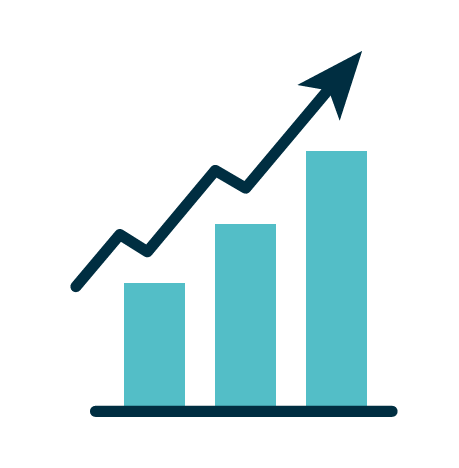

Investimentos

Introdução
Investir é uma forma de fazer seu dinheiro crescer ao longo do tempo. Mesmo com valores pequenos, é possível iniciar e construir patrimônio com disciplina e constância. O objetivo é colocar o dinheiro para trabalhar a seu favor, aproveitando oportunidades de rendimento superiores às tradicionais formas de guardar dinheiro.
Renda Fixa
A renda fixa oferece previsibilidade e segurança. Nela, você sabe como será a remuneração do investimento ou ao menos conhece as regras de cálculo. É ideal para quem busca estabilidade, proteção do patrimônio e retornos mais consistentes ao longo do tempo.
Renda Variável
Na renda variável, os resultados dependem do mercado, podendo subir ou cair. É indicada para quem aceita maior risco em troca de potencial de retorno mais elevado. Exige acompanhamento e visão de longo prazo para lidar com oscilações naturais.
Tesouro Direto
O Tesouro Direto permite investir em títulos públicos emitidos pelo governo. É considerado um dos investimentos mais seguros do país. Existem diferentes tipos de títulos, cada um adequado a um objetivo, como proteger contra inflação ou garantir rendimento previsível.
Fundos de Investimento
Fundos reúnem recursos de vários investidores para aplicar em diversos ativos. Cada fundo possui uma estratégia, nível de risco e objetivo. Eles são administrados por profissionais, facilitando o acesso a investimentos mais complexos.
Perfil de Investidor
Antes de investir, é essencial conhecer seu perfil: conservador, moderado ou arrojado. Isso ajuda a escolher investimentos alinhados ao seu nível de tolerância ao risco e aos seus objetivos financeiros.
Riscos e Retornos
Todo investimento envolve risco. Em geral, quanto maior o risco, maior o potencial de retorno. Entender essa relação ajuda a equilibrar segurança e crescimento, evitando decisões impulsivas ou desalinhadas com seus objetivos.
Diversificação
Diversificar significa distribuir seu dinheiro entre diferentes tipos de investimentos. Essa estratégia reduz riscos e aumenta as chances de bons resultados, pois diminui o impacto de perdas em um único ativo ou setor.